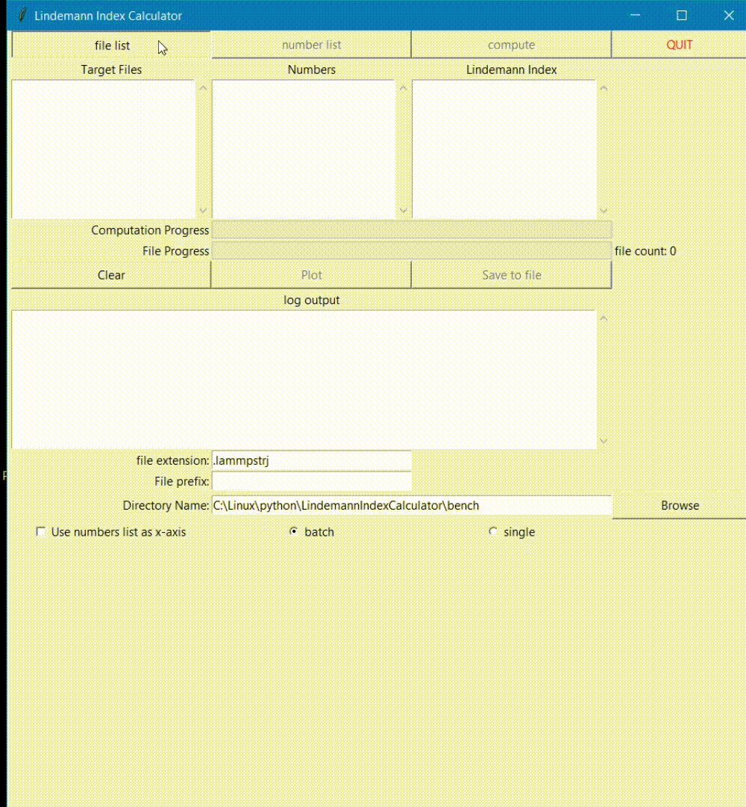
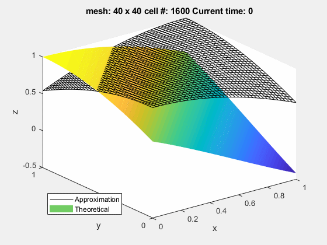

I started programming because calculating huge matrix by hand was tedious.
I continued to learn programming because writing script was faster than copy and pasting 100 times.
I ended up loving programming because my life is filled with my automating scripts and feeling of accomplishment
This python script calculates a lindemann index, which is defined as follows: \[\delta =\frac{2}{N(N-1)} \sum_{i \lt j}\sqrt{\frac{\langle r_{ij}^2 \rangle_t-\langle r_{ij}\rangle_t^2}{\langle r_{ij}\rangle_t}} \]
I had to calculate this value from molecular dynamics simulation dump file and after quick search, I could not find a software or code that does this with my specific condition, so I created one.
Then, changing the parameters to accustom for the specific scenario got tedius, which led to the creation of the GUI to expand the flexibility. The following GIF represents the daily usage.

GithubThis MATLAB code approximates the solution for the following partial differential equation:
\[\frac{\partial p}{\partial t} - \nabla\cdot(\bf{K}\nabla p) = q\]
by converting the strong form to weak form using divergent theorem, and approximating the
solution
using discretization, shape function, Gallerkin's approximation, and Gaussian quadrature.
The resulting animation is below, which shows the approximate solution being updated every time
step
to obtain theoretical solution.

Matlab is great because I didn't have to calculate 40 by 40 by 100 matrix by hand!
Github